For Lulu and the girls who are delulu
(♡⸃ ◡ ⸂♡)
People of highly technological cultures do not intend to destroy the Earth;
we have just been so far removed from our relationship to it that we have forgotten
that our interdependence with the Earth makes us responsible for it.
Debora Hogeland, Widening the Circle
Dear internet user,
We are a group of ex-Silicon Valley/advertising industry employees. We’ve seen how fucked it is.
We have a plan of how it could be different.
We are fundraising $300k to prototype something else
open source
community owned.
$10 gets you beta access & secures your user#.
Make the internet great again.
mayaworld.online
Pls copy & distribute.
Attention is the world’s most precious resource.
Nothing happens without someone deciding to spend attention on it.
It’s behind the love, leadership and laughter in the world.
How we collectively direct attention shapes both
our imagination– what we believe is possible
& our beliefs– what we experience, real or imaginary.
Intention and practice sets the course, creating reality.
Undivided attention is prayer.
You know what captures a lot of our attention these days?
Advertising.
Firstly, a caveat:
Advertising can play a very helpful role in our lives.
I really want to know that a cute new business is opening in the town over.
But the 24/7 media rollercoaster means I’m more likely to know about what Rihanna is up to.
No shade to Rihanna, we didn’t know capitalism was a game until she won it,
And we’re tryna be as prolific as she -
BUT the problem with the amount of advertising we see a day
- 4000-10,000 individual ads says Google -
is that we didn’t ask for them.
Our attention is being captured against our will.
This volume of advertising means that the methods of advertisers have become more slick.
In order to ‘cut through’ and reach us,
it’s been crossed with entertainment and influencing–
The ultimate collab.
But remember, with entertainment, you pay the fare and opt into the fantasy.
It’s your choice whether to enter or not.
Advertising takes that choice away.
You enter the fake fantasy future with no disclaimer
But a call to action
BUY! THIS! PRODUCT!
It will make your life better.
And before you know it
Our minds are preoccupied with the latest gadget lip kit waist trainer laundry routine designer bag sneaker drop.
These become the decisions that form our identity
But are actually taking attention away from our dreams.
We live in a fantasy concocted by a bunch of people in a room who use
Art & Science
To design a world with no discomfort;
To design a world where perfection seems regular;
To engineer the perfect graphic - gesture - interaction - suggestion;
To get you to click buy
And reduce your dreams to a shopping cart.
Don’t they say that it takes 10,000 hours of deliberate practice to become an expert?
I guess we’re all experts now
At living in our heads
In a fantasy world that we try to conjure with products
To keep the “bad” thoughts away.
Comfort, the ideal and ever-changing standard
To the point where
The slightest discomfort is a threat to our existence
Which makes comfort a prison.
Because the reality is:
Reality is uncomfortable.
We need to be able to meet discomfort to feel alive,
To experience magic.
So maintaining comfort means
We are either policing ourselves
Or distracting ourselves
From anything real
Because that would require
being able to hear our Bodies
above the sound of planted fantasies.
The techno-advertising era
Has made capitalism too manipulative;
It’s capitalism in Beast Mode.
The small businesses can’t best the beasts.
Regular Americans don’t get a chance to be great.
The algorithms are just guns for hire amplifying what is already there–
What is already hot
What is already known–
Taking innovation away from all of us.
What if we made a storefront for our online attention
That WE create and own?
So we have a say in:
What we pay attention to,
When we pay attention to it.
Is freedom any more than that?
Own our attention, own the internet.
What becomes the norm on the internet might just become the norm in real life.
MAYAworld is:
Community owned.
Open source.
Non profit.
A place for strangers to become community.
Concept sketch 1: Collective mood board
Add images to a #hashtag instead of adding hashtags to an image. A place to collect all your thoughts around a theme together. See an idea come to life - invent the future!

Concept sketch 2: Personal board/default view
A place to map your personal dreams or to be a profile page, pulling your content from around the web. Think of yourself as the web, not the spider.
Concept sketch 3: Messages overview
A space to save the best media from your conversations.
Concept sketch 4: Plugins (both bought features and store)
Build the features you want as a community, and sell them to each other.
Concept sketch 5: Attention map, allowing you to see the direction of your attention (and your intention).
Knowledge is power, see where your attention goes.
If you think it’s possible then you’re right.
Sign up to reserve your MAYAgirl number, first come first served.
Play the revolution.
MAYAworld.online
We do not belong to a flag, but to a world that does not yet exist; and every word we write, every act of kindness we try to do, is in preparation for this.
If we must belong anywhere, then we belong to the future.
We are proud citizens of nowhere, because our ideal residence cannot be seen, we have not yet brought it into being.
But we will, and then we will belong there, and so will all of you. From the future, we bid you welcome.
–Musa Okwonga
Dearly beloved
We are gathered here today
To get through this thing called "life"
Electric word, life
It means forever and that's a mighty long time
But I'm here to tell you there's something else
The afterworld
A world of never ending happiness
You can always see the sun, day or night
So when you call up that shrink in Beverly Hills
You know the one, Dr. Everything'll-Be-Alright
Instead of asking him how much of your time is left
Ask him how much of your mind, babe
Prince, Let’s Go Crazy
Statement from the future
November 2024
After Facebook’s involvement with multiple elections and insurrections across the globe, it’s not surprising that a website can affect an election, but no one ever saw it coming in the way it happened with MAYAworld.
The story starts in May 2023. People started seeing the concept on TikTok. At first they didn’t quite understand, because they were used to thinking linearly. They had come, on some level, to represent the feeds of content they scrolled through and the feedback loops that urged them to purchase. They had become walking mirrors of commercial algorithms.
MAYAworld promised something different. An infrastructure and interface to surf the web that was not owned by an advertising company, which Google and Meta technically were. Fifty thousand Millennials chose to pay $10 and co-design the prototype as beta testers - what the heck, it was the price of an avocado toast.
At first it was a fun place for the beta testers to plan upcoming events in their lives. But they quickly used it to plan bigger and bigger dreams. Because MAYA was designed so anyone could build the features they needed, specific utilities that served niche groups started popping up and finding an audience. Bedroom coders all over the country started making enough money to live, and stopped dreaming of Silicon Valley.
The biggest breakthrough of the beta test was MAYAmarket. Initially set up as a way to sell plugins and features for the site, it quickly expanded to become a storefront for other things. A plugin that allowed people to ask for exactly what they wanted and be matched to artisans who could produce it became a huge hit. Suddenly people began to see the possibility of a supply chain without waste. A plugin that allowed people to ‘trademark’ ideas in MAYAworld as a proxy license for creative projects spawned trending topics in the outside world, and led to film screenings within MAYAworld. People began to see an alternative to needing intellectual property - they could split the money fairly between the people who had been involved, but also share the profits with those who had inspired the project based on the contributions to the boards. People started to experience living in a different economy, a fairer market. Because they might get to share in the profits of the ideas on the boards, people started being kinder and more thoughtful in their critique.
Once you have experienced something, even for a second, you know it is possible.
The rest is history. When MAYAworld became publicly available it became the fastest “app” to hit 100m users, in 45 days, beating ChatGPT at 60 days.
Big businesses cannot compete because customers are getting exactly what they want at a reasonable price. They are happy to wait a little while for the perfect thing made just for them by a local artisan. Suddenly bespoke isn’t only the preserve of the rich, it is every American’s right.
The MAYAmarket storefront allows players to shop online at traditional e-commerce stores, but the e-tailers have to pay commission to be in the store. Depending on how much tax they evade, the commission is 10-30%. 70m players have decided to shop online only through the storefront, generating huge amounts of profit for MAYAworld, which is being redistributed to players through business grants.
People are finally living the promise of capitalism. A healthy economy that everyone can participate in.
Unsurprisingly MAYAworld has dominated the election newscycle.
Both political parties have found fault with it and the media is full of critique.
But to regular people, it just seems like the politicians are pining for the old days when they could get paid for campaign-complaining without doing a damn thing except lining their own pockets.
But now the players have MAYAworld, so they can be understanding. Political parties and media industries are full of people who left where they came from, in search of a better life in the city. They used politics and media to tell their story of dissatisfaction with their life, and created a world of dissatisfaction. They didn’t know that the best life was already around us, in the people they left behind and didn’t give a chance.
It’s beautiful to see a reversal happening. As players find their people on MAYAworld, boards are becoming the foundations for communes. But unlike the communes of the past, players are integrating into small towns that have been decimated by big business.
Artification not gentrification.
Capitalism for the people.
Americans get to be great again.
° . ● . ★ ° . * ° * . : :●. *° :●. * . * . ˚ *. * * ⋆ .
· ⋆ ˚ ˚ ✦⋆ · *⋆ ✧ · ✧ ✵ . ★ ° . * ° . °☆° . ● . ★ ° . *★ ° . * ° . °☆★ ° . * *☆°. ☆. * ● ¸ . ★ ° :●. *° :●. *★ ° . *º :●: : • ○ ° ★ . * . ○ ° ★ . * . * ● ¸ . ★ ° . *★ ° . ● . ★ ° . * ° . * ● ¸ . ★ ° :
° . ● . ★ ° . * ° . * ● ¸ . ★ ° :°☆ . * ● ¸. ★ :●. *° :●. *☆
° :. * •★ ° . * ° . °☆. * .
★ . ° . . ★ . * ● ¸ . ★ ° :●. *:●. *°:●. *° :●. *☆:●. *° :●. *☆ • ○ ° ★ . * . .:●. *° . *☆ ° . ● . ★ ° . * ° . * ● ¸ . ° :●. * ﾟ ＊ ·̩ ｡ ☆ ﾟ ＊ ｡* + ＊ ･ ｡ ﾟ ＊ ☆ ★ ° . * ° . °☆ * ★ ★ ° . * ★ ° . ° . °☆ ° . °☆°☆ . * ● ¸ . ★ ° :●. *
Credits:
Visuals: MAYAgirl#4
Editor: Beth Williams
Sounds: Breakfast with BokBok 16 January 2023
Refreshment: GT’s Synergy Kombucha
Inspiration: Mandarin Cherry Lime Dog & Banana Dog from Rose Los Angeles
Everything else: Dave’s Unstoppable Tour, Jamaica
If you’re interested:
Tell a friend
Sign up {link to payment page}
Join the conversation on Discord
Follow us on socials: Instagram MAYAgirl#1 on TikTok
We’re especially interested in meeting:
Indigenous people, artists, and elders, especially combinations of all three.
Tech: Devs who are into MySpace, Obsidian, Zora, Landing Page, Miro, Butter.